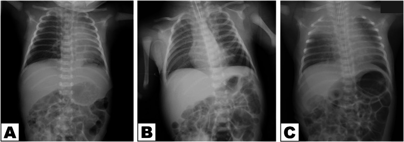
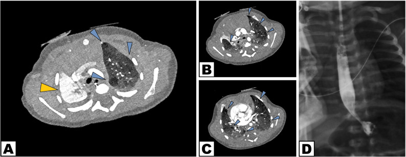
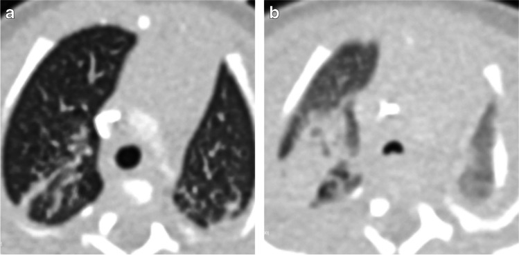
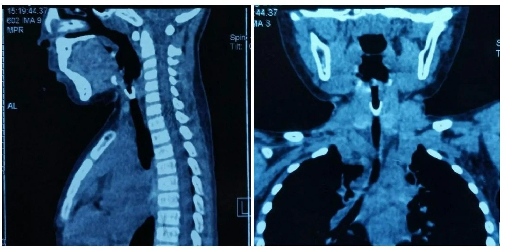

6101 — Xẹp phổi một bên tái diễn ở trẻ BPD/TBM: nút nhầy, hẹp phế quản, dị vật hay chèn ép? / Recurrent unilateral atelectasis in BPD/tracheobronchomalacia
Tags: pattern:xep-phoi pattern:mat-the-tich pattern:u-khi vung:phoi-nhi anatomy:phex-quan protocol:X-quang-nguc protocol:CT-nguc-lieu-thap protocol:noi-soi-phe-quan incidentaloma:khong
Mức chắc chắn (certainty): tổng hợp y văn (literature synthesis) — ghép đoàn hệ 81 trẻ BPD chụp HRCT (Front Pediatr 2022, PMC9530466), đoàn hệ 56 trẻ BPD độ 3 nội soi phế quản (Pediatr Pulmonol 2025, PMC12606695), tổng quan hình ảnh BPD (Pediatr Radiol 2022, PMC8921108), nghiên cứu CXR vs CT ở 71 trẻ nghi dị vật đường thở (Children (Basel) 2025, PMC12384725), ca dị vật phế quản có CT (BMC Pediatr 2026, PMC13711882), ca rối loạn chuyển động lông mao (PCD) biểu hiện xẹp phổi tái diễn (BMC Pediatr 2026, PMC13383552) và nghiên cứu hội chứng thùy giữa ở trẻ hen (Front Pediatr 2023, PMC9939435). Không có ca do nhóm tự chụp.
Câu hỏi thực hành: bé trai 14 tháng, sinh 26 tuần, BPD, đang mở khí quản; 3 tháng nay xẹp thùy trên phải tái diễn 2 lần, mỗi lần thở rít thì thở ra và tăng oxy. X-quang có mờ thùy trên phải + hạch. Câu hỏi: xẹp do nút nhầy, do TBM, do hẹp phế quản, do dị vật, hay do chèn ép mạch máu — và khi nào cần nội soi phế quản? Bài chốt bốn quyết định: (1) xẹp tái diễn CÙNG một thùy = bệnh đường thở khu trú, phải tìm nguyên nhân cơ học; (2) X-quang xác nhận mất thể tích, CT liều thấp trả lời “tắc ở đâu, do gì”; (3) nội soi phế quản là tiêu chuẩn vàng và vừa chẩn đoán vừa điều trị (hút nút nhầy, gắp dị vật, nong); (4) TBM có thể bị “che” bởi PEEP/an thần — nội soi lần đầu bỏ sót tới 35%. Nối 602 – TBM ở trẻ BPD, 606 – BPD ở trẻ sinh non, 6100 – Chăm sóc & cai ống mở khí quản, 3047 – Hẹp khí quản sau đặt nội khí quản.
1. Tổng quan bệnh học – cơ chế hình ảnh: vì sao “xẹp phổi” là chuyện của đường thở, không phải của nhu mô
- Định nghĩa: xẹp phổi (atelectasis) là giảm thể tích khí trong phổi do đường thở mất thông khí và/hoặc phổi mất lực mở. Trên hình ảnh, chốt chẩn đoán là dấu hiệu mất thể tích (volume loss), không phải “độ đậm của vùng mờ”: khe di lệch về phía tổn thương, trung thất lệch cùng bên, cơ hoành nâng, cung sườn sát nhau, và phế quản hơi chỉ còn khi tắc không hoàn toàn.
- TẠI SAO trẻ BPD/TBM hay xẹp tái diễn: ba cơ chế cộng hưởng —
- Đường thở mềm, dễ xẹp (TBM): sụn yếu + màng sau rộng → thì thở ra lòng phế quản xẹp > 50%, khí bị “nhốt” rồi hấp thu → xẹp phân thùy/thùy.
- Chất nhầy quánh + ho yếu: viêm mạn, ít đàn hồi, cơ hô hấp yếu (nhất là khi có mở khí quản) → nút nhầy (mucus plug) bít phế quản thùy.
- Phổi ít đàn hồi và ứ khí: vùng phổi ứ khí chèn ép vùng bên cạnh, làm xẹp dễ hơn; thông khí chọn lọc hoặc PEEP có thể mở lại nhưng cũng có thể che mất chẩn đoán.
- Số liệu nền: trong 81 trẻ BPD chụp HRCT 40–50 tuần tuổi sau kinh, 24,69% có TBM và 49,38% có tăng áp phổi; điểm HRCT không khác biệt giữa có/không TBM, tức CT tĩnh không đủ để loại trừ TBM (Front Pediatr 2022, PMC9530466).
- TẠI SAO nội soi lần đầu dễ bỏ sót: trong 56 trẻ BPD độ 3, TBM gặp 66% khi nội soi lặp lại nhưng lần đầu chỉ 41% — bỏ sót 35%; 77% ca bỏ sót có an thần sâu hơn lần sau, trung vị phát hiện muộn 6,7 tuần (Pediatr Pulmonol 2025, PMC12606695). Nguyên nhân: PEEP và gây mê “giằng” đường thở mở ra, mất dấu xẹp động.
- TẠI SAO vị trí hay gặp là thùy giữa phải và lưỡi: phế quản thùy giữa hẹp, đi góc nhọn, tuần hoàn phụ (collateral ventilation) kém → dễ xẹp và khó mở lại; gọi là hội chứng thùy giữa (middle lobe syndrome, MLS). Ở trẻ hen, MLS gặp 1,62% (56/3.528); trong 35 trẻ hen có xẹp thùy giữa/lưỡi, 15 trẻ tái diễn (Front Pediatr 2023, PMC9939435).
- Dị vật — nguyên nhân “không được bỏ qua”: 89,7% dị vật là chất hữu cơ; 43,7% nằm ở phế quản gốc phải; chỉ ~11% dị vật cản quang, nên X-quang bình thường không loại trừ. Trong 71 trẻ nội soi vì nghi dị vật: CXR độ nhạy 94,9%, độ đặc hiệu 71,0%; CT độ nhạy 63,2%, độ đặc hiệu 100% (Children (Basel) 2025, PMC12384725). Con số này nhắc: CT không thay thế nội soi, và X-quang âm tính vẫn phải nội soi nếu bệnh sử điển hình.
- Xẹp “di chuyển” (shifting atelectasis) là cờ đỏ của nguyên nhân hệ thống: xẹp lần lượt thùy này rồi thùy khác, tái diễn nhiều đợt → nghĩ rối loạn chuyển động lông mao (primary ciliary dyskinesia, PCD), xơ nang (cystic fibrosis), hít sặc, suy giảm miễn dịch, chứ không chỉ là “nút nhầy đơn thuần”.
2. Mẫu hình + chẩn đoán phân biệt theo cơ chế và vị trí (Gamut)
- Theo cơ chế — 4 tầng “từ trong ra ngoài”:
- Trong lòng (intraluminal): nút nhầy (hay nhất ở BPD/mở khí quản), bã nhầy dạng phế quản (plastic bronchitis), cục máu đông, dị vật.
- Thành (mural): TBM/bronchomalacia, hẹp phế quản sau đặt nội khí quản/mở khí quản, u hạt (granuloma) quanh ống, u nội phế quản (carcinoid, papillomatosis — hiếm ở trẻ).
- Ngoài thành (extrinsic): chèn ép mạch máu (động mạch phổi giãn, ống động mạch, quai ĐMC đôi), hạch to, tim to.
- Nhu mô/màng phổi: tràn dịch, tràn khí, xẹp do chèn ép; bệnh phổi hạn chế.
- Theo vị trí: thùy giữa phải/lưỡi (MLS) · thùy trên trái (phế quản gốc trái dài, dễ tắc) · phế quản gốc phải (dị vật) · toàn một bên phổi (tắc phế quản gốc, dị vật lớn, hẹp khí quản) · nhiều thùy di chuyển (PCD/CF/hít sặc).
- Mnemonic “MALT” cho xẹp một bên tái diễn: Mucus (nút nhầy/bã) · Airway collapse (TBM, malacia) · Lesion in the lumen (dị vật, u) · Third-party compression (mạch máu/hạch). Thêm Systemic (PCD/CF/aspiration) khi xẹp đổi vị trí.
- Mẫu hình gợi ý trên phim: mờ thùy + khe di lệch + không có phế quản hơi = tắc hoàn toàn (nút nhầy, dị vật, hẹp); mờ thùy + còn phế quản hơi = tắc không hoàn toàn hoặc xẹp do chèn ép; mờ hình ngón tay (finger-in-glove) = ứ nhầy phế quản; thay đổi nhanh sau khi đặt PEEP/nội soi = TBM/nút nhầy.
3. Bảng so sánh phân biệt (ma trận đối chiếu)
| Thực thể | Hình ảnh điển hình | Chốt vào (rule-in) | Chốt loại (rule-out) | Gợi ý xác nhận |
|---|---|---|---|---|
| Nút nhầy (mucus plug) | Mờ thùy/phan thùy, khe di lệch, không phế quản hơi; CT: dạng ống/phân nhánh đậm độ mô mềm trong lòng phế quản, có thể “finger-in-glove” | Xẹp cấp sau đợt ho/viêm + mở lại ngay sau hút/nội soi | Tổn thương không mở lại sau hút, có chồi trong lòng → nghĩ u/hẹp | Nội soi phế quản hút kiểm tra; so phim cũ |
| TBM/bronchomalacia | Xẹp thì thở ra, ứ khí; CT động: lòng giảm > 50% thì thở ra; X-quang có thể bình thường | Xẹp > 50% khi thở ra + khó cai máy/thở rít thì thở ra + xẹp cùng vị trí tái diễn | Đường thở mở đều khi thở ra; không xẹp động | Nội soi ống mềm giảm an thần, chỉnh PEEP; CT 2 thì (bài 602) |
| Hẹp phế quản/khí quản | Hẹp khu trú tại vị trí ống thông/ống mở khí quản, dày thành, hẹp cố định cả thì hít vào–thở ra | Tiền sử đặt ống > 1–2 tuần + hẹp cố định + khó cai ống | Lòng mềm, chỉ xẹp khi thở ra → TBM, không phải hẹp xơ | Nội soi + CT lát mỏng; đo Myer–Cotton (bài 3047) |
| Dị vật | Mờ thùy một bên, ứ khí bù trừ; chỉ ~11% cản quang; CT có thể thấy vật cản | Bệnh sử sặc/khởi phát đột ngột + xẹp/hít vào một bên + ho từng cơn | Bệnh sử mạn, nhiều thùy, không có yếu tố sặc | Nội soi phế quản (không chờ CT); CXR Se 94,9%/Sp 71,0%, CT Se 63,2%/Sp 100% |
| Chèn ép mạch máu | Hẹp từ ngoài vào, mạch máu lớn cạnh phế quản; xẹp tái diễn khi mạch giãn | Hình ảnh chèn ép + mạch máu lớn (ĐM phổi, quai ĐMC) + xẹp khi bú/khóc | Không thấy mạch chèn ép, lòng phế quản đều | CT có cản quang/CTA; siêu âm tim |
| MLS (thùy giữa/lưỡi) | Mờ thùy giữa/lưỡi, khe di lệch, tái diễn nhiều đợt; hay ở trẻ hen | Xẹp thùy giữa/lưỡi tái diễn + hen + ít đáp ứng giãn phế quản | Xẹp thùy khác, một đợt duy nhất | CT + nội soi loại trừ tắc; FEV1 (bài hen) |
| PCD/CF (nguyên nhân hệ thống) | Xẹp đổi thùy qua nhiều đợt, ứ khí lan tỏa, viêm mũi xoang, (PCD: có thể kèm situs inversus, nhưng không bắt buộc) | Xẹp “di chuyển” + viêm mũi xoang mạn + tiền sử sơ sinh | Xẹp cố định một thùy, không triệu chứng mũi xoang | Nội soi + xét nghiệm lông mao/mồ hôi; CT ngực |

*Trẻ sơ sinh có xẹp phổi tái diễn: (A) ngày 4 — giảm thông khí toàn bộ phổi trái; (B) 2 giờ sau đặt nội khí quản và thông khí áp lực dương — phổi trái mở lại rõ; (C) ngày 6 — xẹp thùy trên phải mới. Kiểu đổi vị trí này gợi ý nguyên nhân hệ thống (PCD/CF/hít sặc), không phải một nút nhầy đơn thuần. Nguồn: BMC Pediatr 2026 (PMC13383552), CC BY-NC-ND 4.0, nguyên bản.*
Cùng bệnh nhi, CT ngực có cản quang ngày 19: (A–C) xẹp thùy trên phải (mũi tên vàng) và ứ khí rải rác các thùy (mũi tên xanh); (D) lưu đồ baryt không thấy rò khí–thực quản/trào ngược. CT trả lời “tắc ở đâu, phổi bên cạnh thế nào”, nhưng không thay thế nội soi để tìm nguyên nhân trong lòng. Nguồn: BMC Pediatr 2026 (PMC13383552), CC BY-NC-ND 4.0, nguyên bản.4. Protocol: từ X-quang đến nội soi — và ngưỡng can thiệp
- Bước 1 — X-quang ngực 2 tư thế (thẳng + nghiêng), luôn so phim cũ: xác nhận mất thể tích (khe/trung thất/cơ hoành), tìm mức khí–dịch, ứ khí bù trừ, dị vật cản quang. Ở trẻ có ống mở khí quản: kiểm tra vị trí đầu ống, u hạt, hẹp do ống. X-quang không loại trừ dị vật (~11% cản quang).
- Bước 2 — CT ngực liều thấp khi câu hỏi là “tắc ở đâu / do gì”: lát 0,625 mm, 80 kV, CTDIvol ~0,89 mGy, DLP ~15,4 mGy·cm (Front Pediatr 2022, PMC9530466). Đọc theo đường thở: lòng phế quản có nút nhầy/bã, hẹp cố định, chèn ép từ ngoài, dị vật, ứ nhầy hình ngón tay; đánh giá phổi bên cạnh (ứ khí, xẹp, giãn phế quản).
- Bước 3 — CT động/2 thì hít–thở khi nghi TBM: độ nhạy 75–100% (riêng tracheomalacia 37,5%), độ đặc hiệu 48–97%, liều < 2 mSv (Pediatr Radiol 2022, PMC8921108). Luôn chụp có và không PEEP nếu trẻ đang thở áp lực dương — vì PEEP che mất xẹp động.
- Bước 4 — nội soi phế quản ống mềm (tiêu chuẩn vàng + điều trị):
- Chỉ định: xẹp không mở sau 24–72 giờ điều trị nội khoa, xẹp tái diễn cùng vị trí, nghi dị vật, nghi TBM (khó cai máy), nghi hẹp/u.
- Kỹ thuật để không bỏ sót TBM: giảm an thần tối thiểu, giữ trẻ tự thở, đánh giá 3 đoạn (khí quản xa, phế quản gốc phải, trái) ở thì thở ra; nếu đang PEEP, hạ PEEP từng bước để tìm “PEEP tối thiểu giữ đường thở mở ≤ 50% xẹp” (Pediatr Pulmonol 2025, PMC12606695).
- Điều trị trong cùng lần soi: hút/rửa nút nhầy, gắp dị vật, nong bóng chỗ hẹp, đặt stent (hiếm), lấy mẫu BAL.
- Bước 5 — biện pháp hỗ trợ và bắc cầu:
- Vật lý trị liệu hô hấp (dẫn lưu tư thế, rung lồng ngực, ho có hỗ trợ), tư thế nằm nghiêng phổi bên lành khi xẹp một bên nặng.
- CPAP/NIV/PEEP để “giằng” đường thở mềm; thông khí chọn lọc (đẩy ống vào phế quản bên lành hoặc bóng chèn) khi xẹp một bên gây thiếu oxy nặng.
- Kiểm soát trào ngược/hít sặc, điều trị nhiễm trùng, tối ưu dinh dưỡng; tránh thuốc ức chế ho ở trẻ có nút nhầy.
- Bước 6 — can thiệp khi thất bại: mở khí quản (nếu chưa) cho TBM lan tỏa/hẹp trên; aortopexy/tracheopexy cho TBM do chèn ép màng sau; cắt thùy chỉ khi thùy đã phá hủy, giãn phế quản, không hồi phục và gây triệu chứng.
- Theo dõi: đếm số đợt xẹp/năm, số đợt nhập viện, nhu cầu oxy, tăng trưởng; chụp lại chỉ khi có thay đổi lâm sàng, không chụp định kỳ.
flowchart TD
A[Tre co xep phoi mot ben] --> B[X-quang 2 tu the + so phim cu]
B --> C{Co mat the tich ro?}
C -->|Khong| D[Xet lai: viem phoi, tran dich, ky thuat chup]
C -->|Co| E[Dieu tri noi khoa 24-72 gio: vat ly tri lieu, CPAP/NIV, kiem soat trao nguoc]
E --> F{Xep mo lai?}
F -->|Co| G[Theo doi; tim nguyen nhan he thong neu tai dien]
F -->|Khong| H[CT nguc lieu thap: noi nhay, hep, di vat, chen ep]
H --> I{Nghi TBM hoac khong ro?}
I -->|Co| J[CT dong 2 thi hit-tho hoac noi soi giam an than]
I -->|Khong| K[Noi soi phe quan: chan doan + dieu tri]
J --> K
K --> L{Mo lai sau soi?}
L -->|Co| M[Vat ly tri lieu + theo doi tai phat]
L -->|Khong| N[Mo khi quan / aortopexy / cat thuy neu phe huy]

Trẻ sinh 25 tuần, 31 tuần tuổi sau kinh: (a) CT với PEEP 14 cm H₂O — khí quản mở; (b) bỏ PEEP — khí quản xẹp rõ. Đây là lý do phải chụp/soi ở điều kiện không PEEP mới thấy TBM; ảnh cũng giải thích vì sao xẹp phổi “đỡ” ngay sau khi tăng áp lực đường thở. Nguồn: Pediatr Radiol 2022 (PMC8921108), CC BY 4.0, nguyên bản.
*CT ngực trẻ có dị vật khí–phế quản: vật cản trong lòng phế quản (nhóm dị vật hữu cơ chiếm 89,7%, hay gặp phế quản gốc phải 43,7%). CT đặc hiệu 100% nhưng độ nhạy chỉ 63,2% — âm tính không loại trừ, phải nội soi nếu bệnh sử phù hợp. Nguồn: BMC Pediatr 2026 (PMC13711882), CC BY 4.0, nguyên bản.*5. Biến thể bình thường và cạm bẫy
- Bẫy 1 — gọi “viêm phổi” cho mọi vùng mờ: viêm phổi không làm mất thể tích (có thể còn tăng nhẹ), khe không di lệch, có phế quản hơi; xẹp phổi có mất thể tích. Điều trị kháng sinh nhiều đợt cho “viêm phổi tái phát” trong khi thực chất là xẹp do tắc là lỗi hay gặp.
- Bẫy 2 — nút nhầy giả u: ứ nhầy phế quản tạo khối đậm độ mô mềm hình ngón tay, có thể bị đọc là u. Dấu phân biệt: theo phân nhánh phế quản, mờ đi sau khi ho/hút, không xâm lấn.
- Bẫy 3 — X-quang bình thường không loại trừ dị vật: chỉ ~11% dị vật cản quang; CXR có độ nhạy cao nhưng độ đặc hiệu 71%, còn CT độ nhạy 63,2%. Bệnh sử + nội soi quyết định.
- Bẫy 4 — PEEP/an thần che mất TBM: nội soi lần đầu bỏ sót 35%; 77% ca bỏ sót được soi lại dưới an thần nhẹ hơn. Đừng kết luận “không có TBM” sau một lần soi dưới gây mê sâu.
- Bẫy 5 — xẹp “di chuyển” vẫn quy cho nút nhầy: xẹp đổi thùy nhiều đợt phải tìm PCD/CF/hít sặc/suy giảm miễn dịch; trẻ PCD có thể có situs inversus (nhưng nhiều ca situs solitus), viêm mũi xoang mạn, và xẹp ngay từ sơ sinh.
- Bẫy 6 — bỏ qua ống mở khí quản: ở trẻ có trach, xẹp có thể do u hạt quanh ống, ống lệch, hẹp trên ống, tắc ống bằng nút nhầy — luôn kiểm tra ống và vị trí đầu ống trước khi quy cho phổi.
- Bẫy 7 — mở lại quá nhanh thùy xẹp mạn: có thể gây phù phổi tái mở (re-expansion pulmonary edema); mở từ từ, theo dõi SpO₂ và hình ảnh sau 1–2 giờ.
- Bẫy 8 — chụp CT lặp lại: mỗi lần CT là ~0,9 mGy ở trẻ nhỏ nhưng tích lũy theo năm; chỉ chụp khi thay đổi câu hỏi lâm sàng, ưu tiên X-quang + nội soi.
6. Tự lượng giá — Blind Quiz
Ca 1 — Bé 14 tháng, BPD, mở khí quản, xẹp thùy trên phải tái diễn. Nhìn 3 phim, mô tả trước.
- Hỏi: Có mất thể tích không? Vì sao phổi trái “mở lại” ở (B)? Kiểu tái diễn này gợi ý gì?
Bấm để hiện đáp án (findings + chẩn đoán)
- Dấu hiệu: (A) giảm thông khí toàn phổi trái, trung thất hơi lệch trái; (B) sau đặt nội khí quản + thông khí áp lực dương, phổi trái mở lại; (C) ngày 6, xẹp thùy trên phải mới.
- Chẩn đoán: xẹp phổi tái diễn, đổi vị trí — gợi ý nguyên nhân hệ thống (PCD/CF/hít sặc) hoặc đường thở mềm bị xẹp (TBM), không phải một nút nhầy đơn thuần.
- Vì sao (B) mở lại: áp lực dương “giằng” đường thở — vừa là dấu chẩn đoán, vừa là điều trị tạm.
- Nguồn ảnh: BMC Pediatr 2026 (PMC13383552), CC BY-NC-ND 4.0.
Ca 2 — Cùng bệnh nhi, CT ngực.
- Hỏi: CT thêm được thông tin gì so với X-quang? Có cần nội soi không?
Bấm để hiện đáp án
- Dấu hiệu: (A–C) xẹp thùy trên phải (mũi tên vàng) + ứ khí rải rác (mũi tên xanh); (D) không rò khí–thực quản, không trào ngược.
- Giá trị: CT xác định vị trí và mức xẹp, đánh giá phổi bên cạnh, loại trừ chèn ép/dị tật mạch máu, nhưng không thấy nút nhầy nhỏ/nguyên nhân trong lòng.
- Cần nội soi: có — xẹp tái diễn + đổi vị trí cần lấy mẫu BAL, loại trừ tắc, đánh giá TBM dưới an thần tối thiểu.
- Nguồn ảnh: BMC Pediatr 2026 (PMC13383552), CC BY-NC-ND 4.0.
Ca 3 — Trẻ 26 tuần, BPD, khó cai máy; CT có và không PEEP.
- Hỏi: Vì sao (a) và (b) khác nhau? Nếu chỉ chụp (a), kết luận gì sẽ sai?
Bấm để hiện đáp án
- Dấu hiệu: (a) PEEP 14 cm H₂O — khí quản mở; (b) bỏ PEEP — khí quản xẹp (TBM).
- Kết luận sai nếu chỉ xem (a): “đường thở bình thường” → bỏ sót TBM, tiếp tục tăng PEEP mà không can thiệp đúng.
- Liên hệ: nội soi lần đầu bỏ sót 35% TBM khi an thần sâu/PEEP cao; cần hạ PEEP từng bước và đánh giá thì thở ra (bài 602).
- Nguồn ảnh: Pediatr Radiol 2022 (PMC8921108), CC BY 4.0.
Bài liên quan chéo
- 602 – Tracheobronchomalacia ở trẻ BPD: chẩn đoán động học & can thiệp
- 606 – BPD ở trẻ sinh non
- 6100 – Chăm sóc, biến chứng & cai ống mở khí quản ở trẻ
- 3047 – Hẹp khí quản mắc phải sau đặt nội khí quản
- 612 – Cấp cứu đường thở trên ở trẻ em
- 031 – Viêm phổi mẫu hình (phân biệt đông đặc vs xẹp)
Không dùng để chẩn đoán độc lập khi chưa có người hướng dẫn.